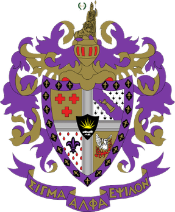

Our Vision
Through friendship, scholarship, leadership, and service, SAE finds students with impeccable character and helps them achieve their full potential, letting them rise up to face every challenge placed before them. We achieve through our creed The True Gentlemen. Founded by John Walter Wayland we carry this creed with each and every member and base our actions and morals on these wise words.

About
Based in Boulder we are a fraternity that is associated with the IFC on the hill. IFC on the hill is one united, independent community, composed of twenty-one national fraternities, with over twenty-three hundred individual brothers who are undergraduate students at the University of Colorado, Boulder.
Being a fraternity and a part of IFC we take the community very seriously and try to be involved in many off campus activities.
Events
Rush Events Tuesday and Thrusday - Week of September 14th and 21st
Parents Weekend - September 19th-21st
Formal Weekend - October 31st-2nd